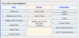
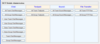

 The OpenRCT administration tool has two main functions. First, it allows administering user, class, and team. Second, it provides an interface to access stored data, which has been created in one of the OpenRCT modules. Thus, you will find access to stored Chat, Textpad, Sound, and File Transfer data.
You can access the OpenRCT administration tool over the Internet via a web browser. If you want to access your institution’s OpenRCT installation, please contact the responsible person to get the administration tool’s URL. If you want to access our OpenRCT v1.6.0 demonstration setup, please point your browser at this address:
http://amia.cs.ucdavis.edu/rct-admin/index.php
All three user types, Administrator, Manager, and User have access to the administration tool. Each user type has very distinct capabilities in terms of what kind of functionality and data they have access to.
Administrator:
An administrator has full access to all the administrative tasks as well as stored data.
Manager:
A manager has access to all administrative tasks and stored data that he/she is responsible for. This means that a manager
administers classes, teams, and users he/she has created via this administration tool. In addition, the manager has full access
to all the created content that pertains to him/her.
User:
A user has access to administrative tasks that are relevant to his/her user account. In addition, a user has access to all the
stored data that he/she has created.
Special Features:
 A manager can prepare course content in advance and control at what time the content is visible to the registered users by setting the visibility flag.
A manager can prepare course content in advance and control at what time the content is visible to the registered users by setting the visibility flag.